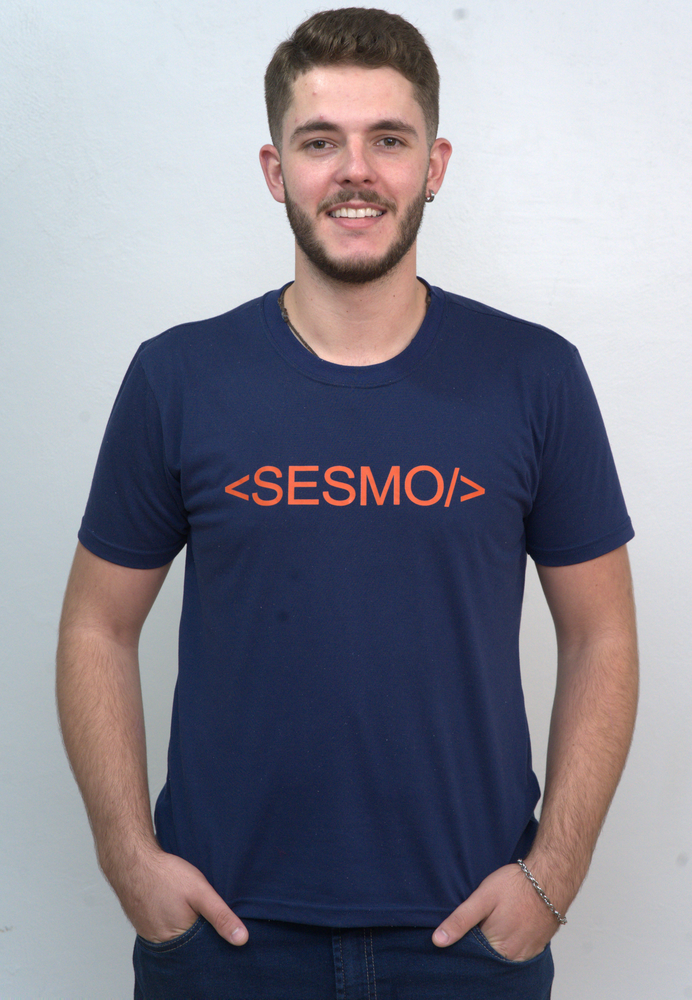
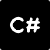
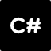

Mateus Vinicius Stangherlin
Desenvolvedor Full Stack Junior
E-mail: mateus_stangherlin@hotmail.com
Contato: 46 99123-5798
Data nascimento: 05/04/2002
Linguagens:
.png "HTML")
.png "CSS") 

.png "Dot NET CORE")
.svg "JavaScript")
Redes